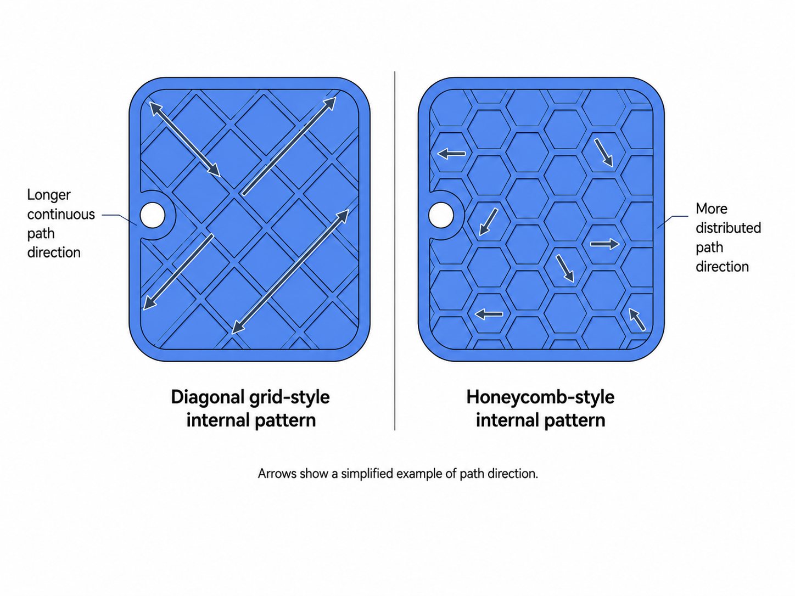

Use secondary slicer adjustments only after the basic checks
Use the following slicer-level adjustments only after checking build plate condition, first-layer contact, build plate temperature, edge adhesion, airflow, and part geometry.
These adjustments do not replace model-specific design changes when the model shape itself causes repeated lifting.
Bottom surface pattern may affect stress distribution
Cause
On some large flat models, the bottom surface pattern may influence how cooling stress becomes visible across the base.
Common symptoms
- Large flat models continue to show edge lifting after all basic checks.
- Edge lifting appears in a similar location each time when the same slicer profile is used.
Recommended action
- Test one alternative bottom surface pattern, such as Concentric or Zigzag, on the same model.
Check the result
- Test only one alternative bottom surface pattern on the same model.
- If edge lifting is reduced under the same printing conditions, stop here and keep the tested bottom surface pattern for this model.
- If the result does not improve, return to the previous pattern before testing another slicer setting.
Notes
- On some flat parts, line-based paths may create longer continuous stress paths across the base.
- No bottom surface pattern works best for every model.
Infill pattern may affect internal stress behavior
Cause
The infill pattern may affect how cooling stress builds inside the part after the base is already attached.
Common symptoms
- Minor warping remains after first-layer correction and brim use.
- The base adheres well at first, but warping develops as the print grows taller.
Recommended action
- Test an alternative infill pattern on the same model.
Check the result
- Test only one alternative infill pattern on the same model.
- If minor warping is reduced after the base has already adhered, stop here and keep the tested infill pattern for this model.
- If the result does not improve, return to the previous infill pattern before testing another slicer setting.
Notes
- Some infill patterns create longer crossing paths or a different material distribution inside the part.
- Results vary by model.
